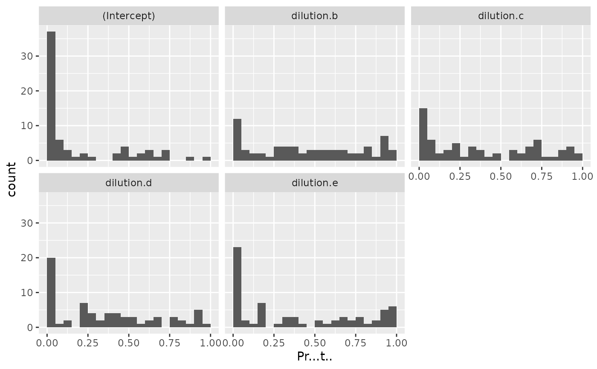
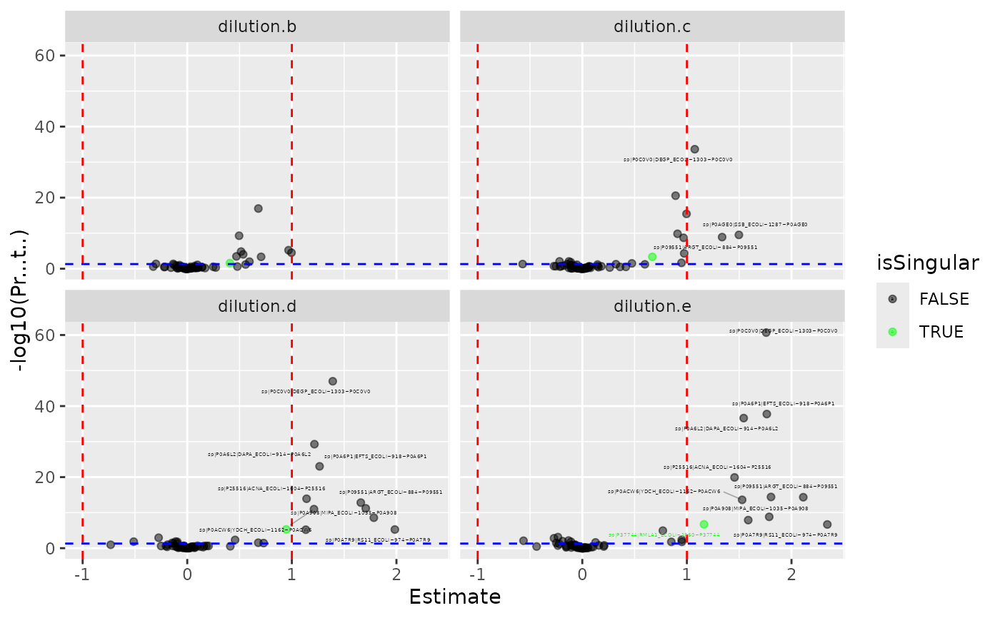
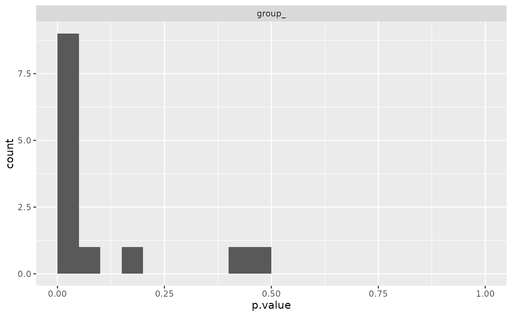

R6 class representing modelling result
R6 class representing modelling result
See also
Other modelling:
AnovaExtractor,
Contrasts,
ContrastsDEqMSFacade,
ContrastsDEqMSVoomFacade,
ContrastsFirth,
ContrastsFirthFacade,
ContrastsLMFacade,
ContrastsLMImputeFacade,
ContrastsLMMissingFacade,
ContrastsLimma,
ContrastsLimmaFacade,
ContrastsLimmaImputeFacade,
ContrastsLimmaVoomFacade,
ContrastsLimmaVoomImputeFacade,
ContrastsLimpaFacade,
ContrastsLmerFacade,
ContrastsMissing,
ContrastsModerated,
ContrastsModeratedDEqMS,
ContrastsPlotter,
ContrastsRLMFacade,
ContrastsROPECA,
ContrastsROPECAFacade,
ContrastsTable,
INTERNAL_FUNCTIONS_BY_FAMILY,
LR_test(),
ModelFirth,
ModelLimma,
StrategyLM,
StrategyLimma,
StrategyLimpa,
StrategyLmer,
StrategyLogistf,
StrategyRLM,
build_contrast_analysis(),
build_model(),
build_model_glm_peptide(),
build_model_glm_protein(),
build_model_impute(),
build_model_limma(),
build_model_limma_impute(),
build_model_limma_voom(),
build_model_limma_voom_impute(),
build_model_limpa(),
build_model_logistf(),
compute_borrowed_variance(),
compute_borrowed_variance_limma(),
compute_contrast(),
compute_lmer_contrast(),
contrasts_fisher_exact(),
get_anova_df(),
get_complete_model_fit(),
get_p_values_pbeta(),
group_label(),
impute_refit_singular(),
is_singular_lm(),
linfct_all_possible_contrasts(),
linfct_factors_contrasts(),
linfct_from_model(),
linfct_matrix_contrasts(),
merge_contrasts_results(),
model_analyse(),
model_summary(),
moderated_p_deqms(),
moderated_p_deqms_long(),
moderated_p_limma(),
moderated_p_limma_long(),
new_lm_imputed(),
pivot_model_contrasts_to_wide(),
plot_lmer_peptide_predictions(),
sim_build_models_lm(),
sim_build_models_lmer(),
sim_build_models_logistf(),
sim_make_model_lm(),
sim_make_model_lmer(),
strategy_limma(),
strategy_limpa(),
strategy_logistf(),
summary_ROPECA_median_p.scaled()
Super class
prolfqua::ModelInterface -> Model
Public fields
model_dfdata.frame with modelling data and model.
model_namename of model
subject_ide.g. protein_Id
model_strategyfunction to create the models
anova_dffunction to compute anova
p.adjustfunction to adjust p-values
Methods
Method new()
initialize
Usage
Model$new(
model_df,
model_strategy,
model_name,
subject_id = "protein_Id",
p.adjust = prolfqua::adjust_p_values
)Arguments
model_dfdataframe with modelling results
model_strategymodel_strategy see
strategy_lmermodel_namename of model
subject_idsubject column name
p.adjustmethod to adjust p-values
Method anova_histogram()
histogram of ANOVA results
Usage
Model$anova_histogram(what = c("p.value", "FDR"))Examples
istar <- prolfqua_data('data_ionstar')$normalized()
istar_data <- dplyr::filter(istar$data ,protein_Id %in% sample(protein_Id, 100))
model_name <- "f_condtion_r_peptide"
formula_randomPeptide <-
strategy_lmer("transformedIntensity ~ dilution. + (1 | peptide_Id)",
model_name = model_name)
pepIntensity <- istar_data
config <- istar$config
config$hierarchy_keys_depth()
#> [1] "protein_Id"
mod <- prolfqua::build_model(
pepIntensity,
formula_randomPeptide,
model_name = model_name,
subject_id = config$hierarchy_keys_depth())
#> boundary (singular) fit: see help('isSingular')
mod$model_df
#> # A tibble: 68 × 9
#> # Groups: protein_Id [68]
#> protein_Id data linear_model has_model_fit isSingular df.residual sigma
#> <chr> <list> <list> <lgl> <lgl> <dbl> <dbl>
#> 1 sp|P21589|5… <tibble> <lmrMdLmT> TRUE FALSE 276 0.298
#> 2 sp|Q9NZM3|I… <tibble> <lmrMdLmT> TRUE FALSE 18 0.250
#> 3 sp|O43660|P… <tibble> <lmrMdLmT> TRUE FALSE 79 0.367
#> 4 sp|P0A908|M… <tibble> <lmrMdLmT> TRUE FALSE 26 0.312
#> 5 sp|P62857|R… <tibble> <lmrMdLmT> TRUE FALSE 53 0.695
#> 6 sp|Q9Y3A5|S… <tibble> <lmrMdLmT> TRUE FALSE 172 0.287
#> 7 sp|Q13838|D… <tibble> <lmrMdLmT> TRUE FALSE 199 0.305
#> 8 sp|O00148|D… <tibble> <lmrMdLmT> TRUE FALSE 178 0.338
#> 9 sp|P25789|P… <tibble> <lmrMdLmT> TRUE FALSE 142 0.435
#> 10 sp|P41252|S… <tibble> <lmrMdLmT> TRUE FALSE 508 0.299
#> # ℹ 58 more rows
#> # ℹ 2 more variables: nr_coef <int>, nr_coef_not_NA <int>
aovtable <- mod$get_anova()
mod$get_coefficients()
#> # A tibble: 340 × 9
#> # Groups: protein_Id [68]
#> protein_Id factor Estimate Std..Error df t.value Pr...t.. isSingular
#> <chr> <chr> <dbl> <dbl> <dbl> <dbl> <dbl> <lgl>
#> 1 sp|P21589|5NTD… (Inte… 0.883 0.358 15.3 2.47 0.0258 FALSE
#> 2 sp|P21589|5NTD… dilut… 0.0975 0.0559 263. 1.74 0.0825 FALSE
#> 3 sp|P21589|5NTD… dilut… 0.0700 0.0557 263. 1.26 0.210 FALSE
#> 4 sp|P21589|5NTD… dilut… -0.0232 0.0564 263. -0.412 0.681 FALSE
#> 5 sp|P21589|5NTD… dilut… 0.127 0.0557 263. 2.27 0.0238 FALSE
#> 6 sp|Q9NZM3|ITSN… (Inte… -1.60 0.124 2.71 -12.9 0.00164 FALSE
#> 7 sp|Q9NZM3|ITSN… dilut… -0.299 0.139 19.0 -2.15 0.0444 FALSE
#> 8 sp|Q9NZM3|ITSN… dilut… -0.201 0.146 19.0 -1.38 0.184 FALSE
#> 9 sp|Q9NZM3|ITSN… dilut… -0.250 0.206 19.8 -1.21 0.240 FALSE
#> 10 sp|Q9NZM3|ITSN… dilut… 0.0464 0.146 19.0 0.318 0.754 FALSE
#> # ℹ 330 more rows
#> # ℹ 1 more variable: nr_coef <int>
mod$coef_histogram()
#> $plot

#>
#> $name
#> [1] "Coef_Histogram_f_condtion_r_peptide.pdf"
#>
mod$coef_volcano()
#> $plot

#>
#> $name
#> [1] "Coef_volcano_plot_f_condtion_r_peptide.pdf"
#>
mod$coef_pairs()
#> $plot
#> # A tibble: 68 × 6
#> subject_id `(Intercept)` dilution.b dilution.c dilution.d dilution.e
#> <chr> <dbl> <dbl> <dbl> <dbl> <dbl>
#> 1 sp|P21589|5NTD_HUM… 0.883 0.0975 0.0700 -0.0232 0.127
#> 2 sp|Q9NZM3|ITSN2_HU… -1.60 -0.299 -0.201 -0.250 0.0464
#> 3 sp|O43660|PLRG1_HU… -1.15 0.0266 -0.0128 0.0302 0.00359
#> 4 sp|P0A908|MIPA_ECO… -1.55 0.997 0.974 1.78 1.79
#> 5 sp|P62857|RS28_HUM… 2.39 -0.325 -0.570 -0.0864 -0.155
#> 6 sp|Q9Y3A5|SBDS_HUM… -0.130 -0.0601 -0.108 -0.0289 -0.106
#> 7 sp|Q13838|DX39B_HU… 1.89 0.00453 0.0587 0.0638 0.0208
#> 8 sp|O00148|DX39A_HU… 1.34 0.0791 0.146 0.0983 -0.0395
#> 9 sp|P25789|PSA4_HUM… 0.955 -0.0780 -0.0389 -0.188 -0.153
#> 10 sp|P41252|SYIC_HUM… -0.146 0.0179 -0.00398 -0.0451 -0.0704
#> # ℹ 58 more rows
#>
#> $name
#> [1] "Coef_Pairsplot_f_condtion_r_peptide.pdf"
#>
mod$anova_histogram()
#> $plot

#>
#> $name
#> [1] "Anova_p.values_f_condtion_r_peptide.pdf"
#>